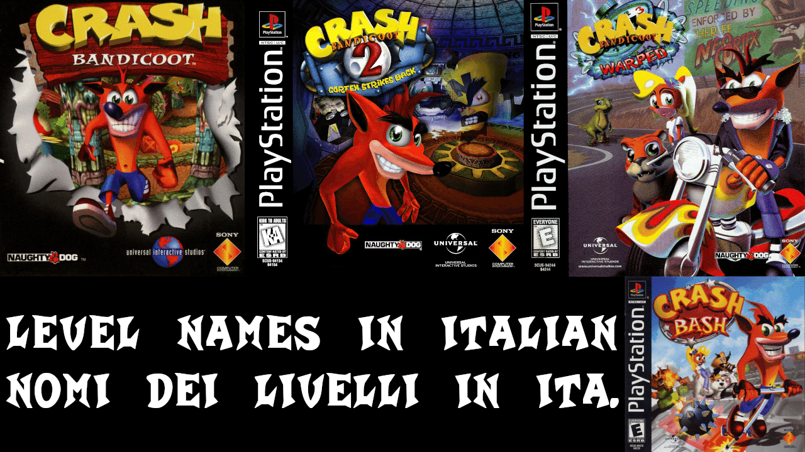

Nomi in 🇮🇹 su triade classica (Crash B.)

🧬 Contesto
Prima di Crash Team Racing (1999) e Crash Bandicoot: l'Ira di Cortex (2001), i precedenti giochi avevano nomi dei livelli che coprivano in sole due lingue: Inglese americano e Giapponese; il resto del mondo usava la 1ª scelta de facto, un problema per la possibile mancata comprensione di alcuni nomi con giochi di parole e doppi sensi.Dato che manco la N. Sane Trilogy (il rifacimento del 2017) s'è degnata di far ciò (per fedeltà), ci si è messa di mezzo la mia mente a rimediare, immaginando (per gioco) d'esser nel reparto creativo di traduzione (nello specifico, adattamento linguistico).
Dal 18 Ott. 2026, per festeggiar la riproposizione e riedizione di tal articolo, ho voluto aggiunger Crash Bash alla lista!
👉 📜 Lista di nomi dei livelli 👈
❤️ E per concludere... + 🗣️ Sezione commenti
Ideato, scritto e curato dal caro •sgn98•: da 12·Gen·2026 a 22·Gen·2026. Riesumato, trasmutato e riadattato come pagina web dal 15·Ott·2026 a 22·Ott·2026Telegram: 👉 Ita. 👈 · 👉 Eng. 👈
Mastodon: 👉 Ita. 👈 · 👉 Eng. 👈
👉 Bluesky 👈 · 👉 Ludomedia 👈
crash crashbandicoot bandicoot crashbash idea list videogame gaming woah activision microsoft universalstudios universalinteractive naughtydog vicariousvisions sony playstation ps1 psx italian levels warproom translation adaptation creative game play playing fun boredom